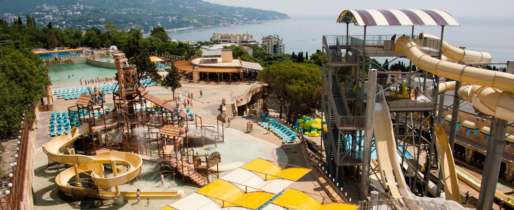

Тематический Парк Крыма: "Атлантида"
Самый большой волновой бассейн, экстремальные и туннельные горки аналогов которым по высоте и протяженности нет в Крыму. Также, к услугам посетителей в новом ялтинском аквапарке: детский водный городок, бассейн для малышей, кафе и ежедневная анимация.
Добраться Вы можете на такси до аквапарка „Атлантида“, а также на маршрутных автобусах № 19 и № 135 (Автовокзал — Центр — Спартак — Атлантида), или №9А и №122 (Вещевой рынок (сквер Юбилейный) — Спартак — Атлантида), или №132 (Гоголя (Спартак) — Атлантида — Алупка).
Стоимость билетов в темтатический Аквапарк зависит от возраста клиента: Взрослый билет 800 Р. Детский билет 600 Р.
Телефон: +7 978 733-43-43
